Big Data - Text Mining
What is “Text Mining”?
- “Text mining, also referred to as text data mining, roughly equivalent to text analytics, refers to the process of deriving high-quality information from text.” - wikipedia
- “Another way to view text data mining is as a process fo exploratory data analysis that lead to heretofore unknown information, or to answers for questions for which the answer is not currently known.” - Hearst, 1999
Text mining around us
- Sentiment analysis
- Document summarization
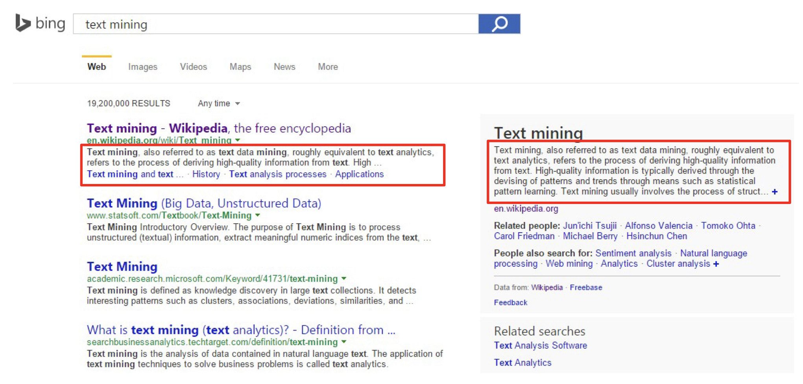
- News recommendation
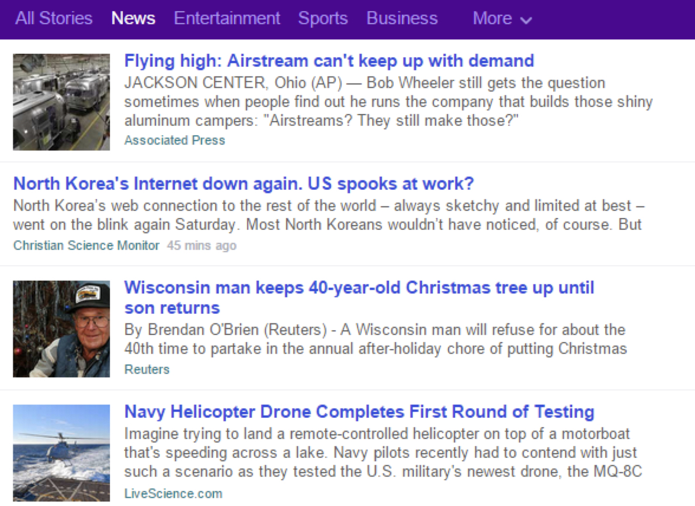
- Text analytics in financial services
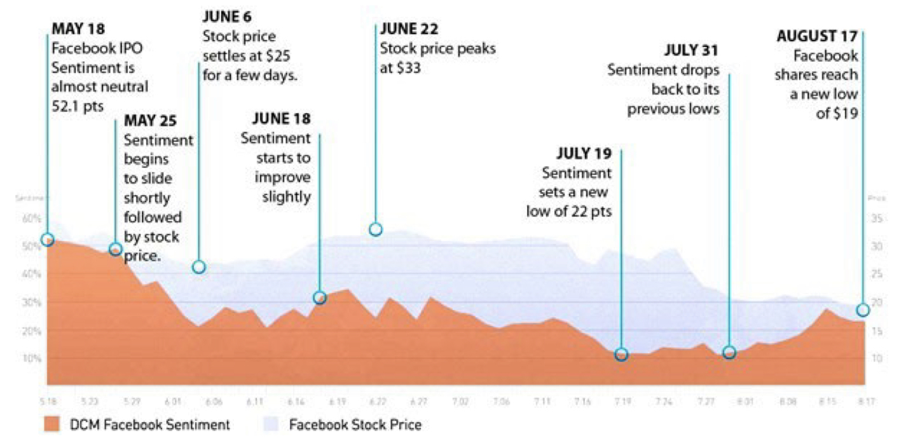
- Text analytics in healthcare
How to perform text mining?
- As computer scientists, we view it as
- Text Mining = Data Mining + Text Data
- Data Mining
- Information retrieval
- Natural language processing
- Applied machine learning
- Text Data
- Scientific literature
- Email, Tweets, News articles
- Software documentations
- Blogs, Web pages
- Data Mining
- Text Mining = Data Mining + Text Data
Text mining vs. NL, IR, DM…
- How does it relate to data mining in general?
- How does it relate to computations linguistics?
- How does it relate to information retrieval?
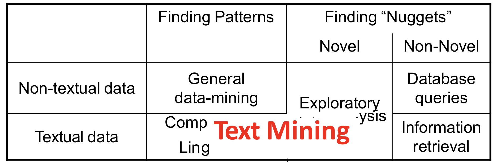
Text mining in general
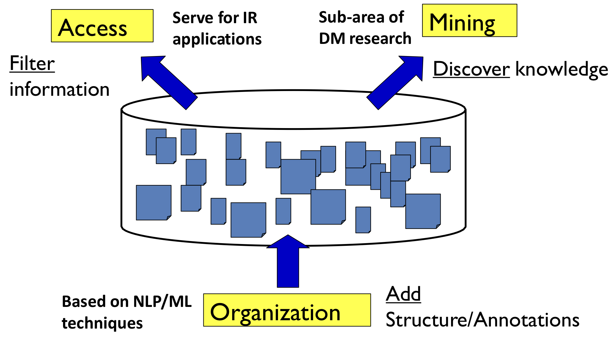
Challenges in text mining
- Data collections is “free text”
- Data is not well-organized
- Semi-structured or unstructured
- Natural language text contains ambiguities on many levels
- Lexical, syntactic, semantic, and pragmatic
- Learning techniques for processing text typically need annotated traning examples
- Expensive to acquire at scale
- Data is not well-organized
- What to mine?
- Huge in size
- Google processes 5.13 B queries/day (2013)
- Twitter receives 340 M tweets/day (2012)
- Facebook has 2.5 PB of user data + 15 TB/day (4/2009)
- 80% data is unstructured (IBM, 2010)
Scalability is crucial
- Large scale text processing techniques
- MapReduce framework
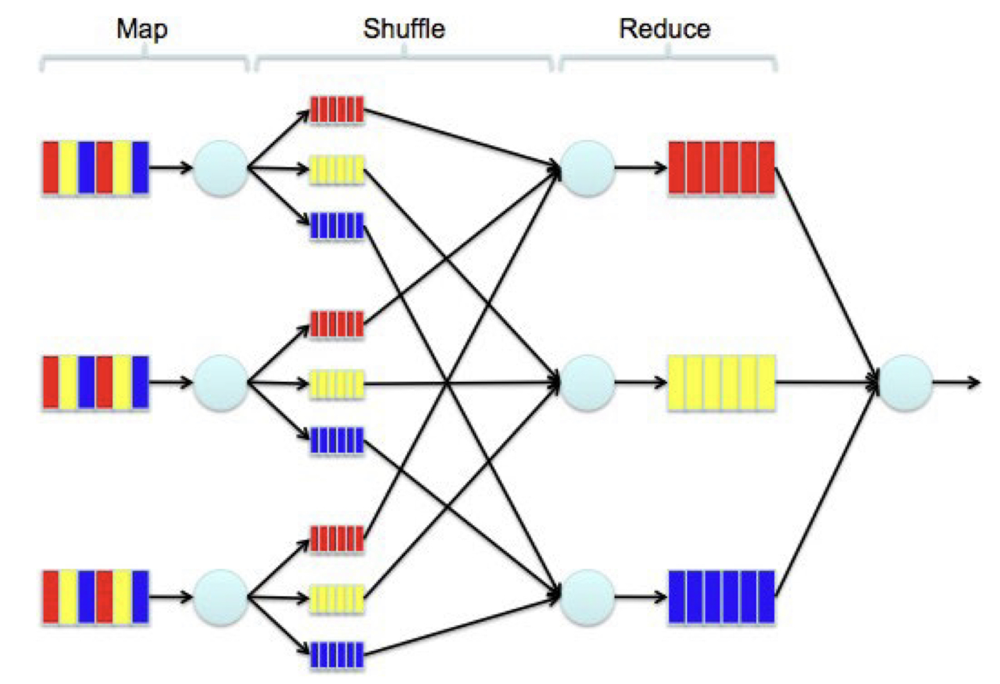
State-of-the-art solutions
- Apache Spark
- In-memory MapReduce
- Specialized for machine learning algorithms
- Speed
- 100x faster than Hadoop MapReduce in memory or 10x faster on disk.
- In-memory MapReduce
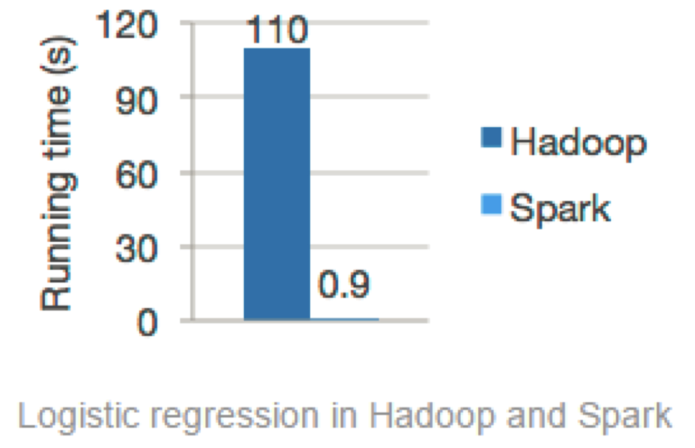
- In-memory MapReduce
- Specialized for machine learning algorithms
- Generality
- Combine SQL, streaming, and complex analytics
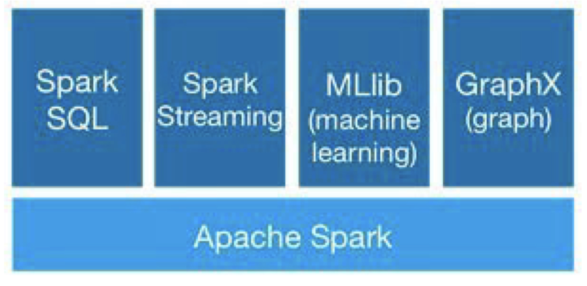
Document Representation
How to represent a document
- Represent by a string?
- No semantic meaning
- Represent by a list of sentences?
- Sentence is just like a short document (recursive definition)
Vector Space (VS) model
- Represent documents by concept vectors
- Each concept defines one dimension
- k concepts define a high-dimensional space
- Element of vector corresponds to concept weight
- Distance between the vectors in this concept space
- Relationship among documents
An illustration of VS model
- All documents are projected into this concept space
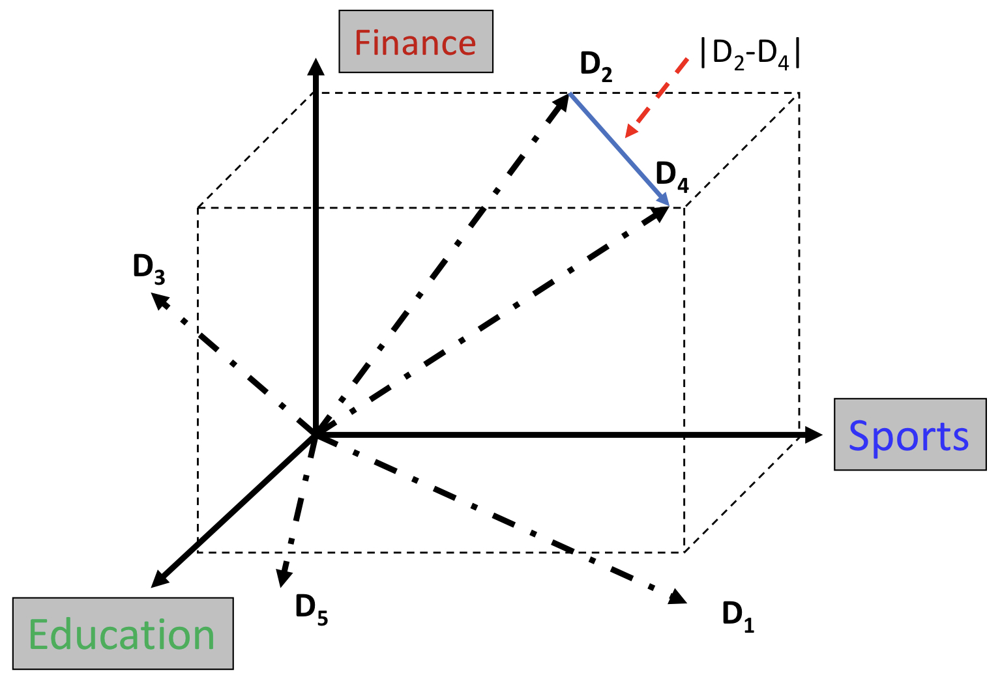
What the VS model doesn’t say
- How to define/select the “basic concept”
- Concepts are assumed to be orthogonal
- How to assign weights
- Weights indicate how well the concept characterizes the document
- How to define the distance metric
What is a good “Basic Concept”?
- Orthogonal
- Linearly independent basis vectors
- “Non-overlapping” in meaning
- No ambiguity
- Linearly independent basis vectors
- Weights should be assigned automatically and accurately
- Existing solutions
- Terms or N-grams, a.k.a., Bag-of-Words
- Topics
Document Representation: Bag-of-Words
Bag-of-Words representation
- Term as the basis for vector space
- Doc1: Text mining is to identify useful information.
- Doc2: Useful information is mined from text.
- Doc3: Apple is delicious.
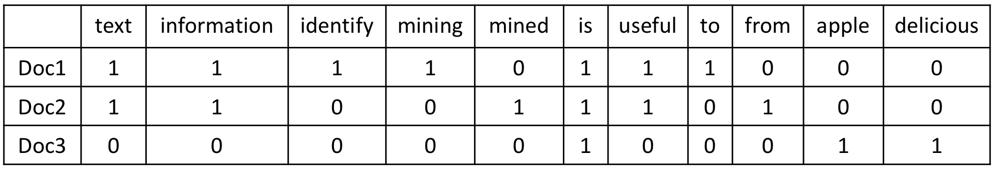
Tokenization
- Break a stream of text into meaningful units
- Tokens: words, phrases, symbols
- Input: It’s not straight-forward to perform so-called “tokenization”.
- Output(1): “‘It’s’, ‘not’, ‘straight-forward”, ‘to’, ‘perform’, ‘so-called’, ‘tokenization’”
- Output(2): “‘It’, ‘’s’, ‘not’, ‘straight’, ‘-‘, ‘forward’, ‘to’, ‘perform’, ‘so’, ‘-‘, ‘called’, ‘tokenization’”
- Tokens: words, phrases, symbols
- Definition depends on language, corpus, or even context
- Solutions
- Regular expressions
- [\w]+: so-called -> ‘so’, ‘called’
- [\S]+: It’s -> ‘It’s’ instead of ‘It’, ‘’s’
- Statistical methods
- Explore rich features to decide where the boundary of a word is
- Apache OpenNLP
- Standford NLP Parser
- Online Demo
- Standford
- UIUC
- Explore rich features to decide where the boundary of a word is
- Regular expressions
Bag-of-Words representation
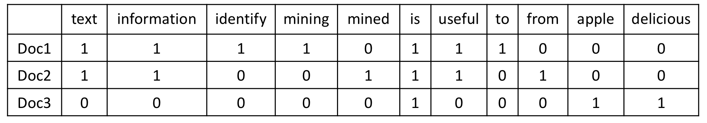
- Assumption
- Words are independent from each other
- Pros
- Simple
- Cons
- Basis vectors are clearly not linearly independent!
- Grammar and order are missing
- The ost frequently used document representation
- Image, speech, gene sequence
Bag-of-Words with N-grams
- N-grams: a contiguous sequence of N tokens from a given piece of test
- E.g., ‘Text mining is to identify useful information’
- Bigrams: ‘text_mining’, ‘mining_is’, ‘is_to’, ‘to_identify’, ‘identify_useful’, ‘useful_information’, ‘information_’
- Pros: capture local dependency and order
- Cons: a pure statistical view, increase the vocabulary size O(VN)
Automatic document representation
- Represent a document with all the occurring words
- Pros
- Preserve all information in the text (hopefully)
- Fully automatic
- Cons
- Vocabulary gap: cars versus car, talk versus talking
- Large storage: N-grams needs O(VN)
- Solution
- Construct controlled vocabulary
- Pros
A statistical property of language
- Zipf’s law
- Frequency of any word is inversely proportional to tis rank in the frequency table
- Formally
where k is rank of word; N is the vocabulary size; s is language-specific parameter
- Simply
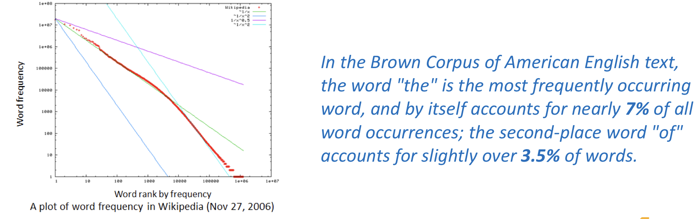
Zipf’s law tells us
- Head words take large portion of occurrences, but they are semantically meaningless
- E.g., the, a, an, we, do, to
- Trail words take major portion of vocabulary, but they rarely occur in documents
- E.g., sesquipedalianism
- The rest is most representative
- To be included in the controlled vocabulary
Automatic document representation
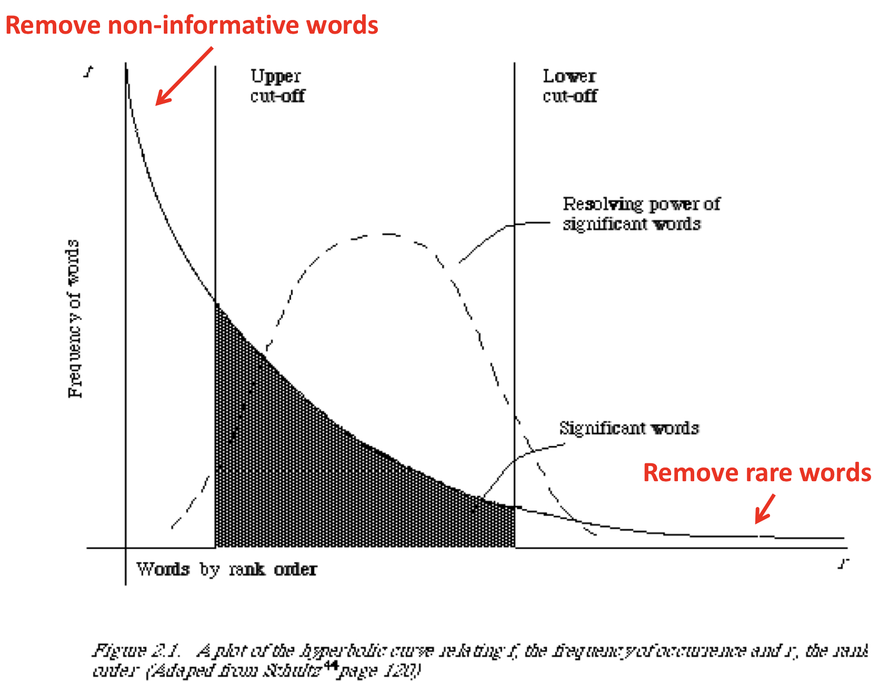
Stopwords
- Useless words for document analaysis
- Not all words are informative
- Remove such words to reduce vocabulary size
- No universal definition
- Risk: break the original meaning and structure of text
- E.g., this is not a good option -> option to be or not to be -> null
Normalization
- Convert different forms of a word to a normalized form in the vocabulary
- U.S.A -> USA, ST.Louis -> Saint Louis
- Solution
- Rule-based
- Delete periods and hyphens
- All in lower cases
- Dictionary-based
- Construct equivalent calss
- Car -> “automobile, vehicle”
- Mobile phone -> “cellphone”
- Construct equivalent calss
- Rule-based
Stemming
- Reduce inflected or derived words to their root form
- Plurals, adverbs, inflected word forms
- E.g., ladies -> lady, referring -> refer, forgotten -> forget
- Bridge the vocabulary gap
- Solutions (for English)
- Porter stemmer: patterns of vowel-consonant sequence
- Krovetz stemmer: morphological rules
- Risk: lose precise meaning of the word
- E.g., lay -> lie (a false statement? or be in a horizontal position?)
- Plurals, adverbs, inflected word forms
Constructing a VSM representation
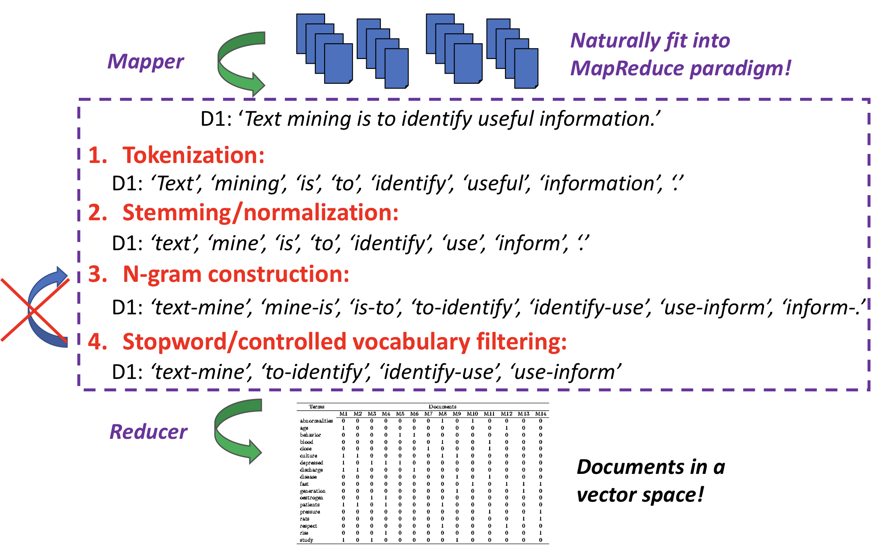
How to assign weights?
- Important!
- Why?
- Corpus-wise: some terms carry more information about the document content
- Document-wise: not all terms are equally important
- How?
- Two basic heuristics
- TF (Term Frequency) = Within-doc-frequency
- IDF (Inverse Document Frequency)
- Two basic heuristics
Term frequency
- Idea: a term is more important if it occurs more frequently in a document
- TF Formulas
- Let c(t,d) be the frequency count of term t in doc d
- Raw TF: tf(t,d) = c(t,d)
Which two documents are more similar to each other?
- ‘good weather’, 10
- ‘good weather’, 2
- ‘good weather’, 3
TF normalization
- Two views of document length
- A doc is long because it is verbose
- A doc is long because it has more content
- Raw TF is inaccurate
- Document length variation
- “Repeated occurrences” are less informative than the “first occurrence”
- Information about semantic does not increase proportionally with number of term occurrence
- Generally penalize long document, but avoid over-penalizing
- Pivoted length normalization
- Maximum TF scaling
- Normalize by the most frequent word in this doc
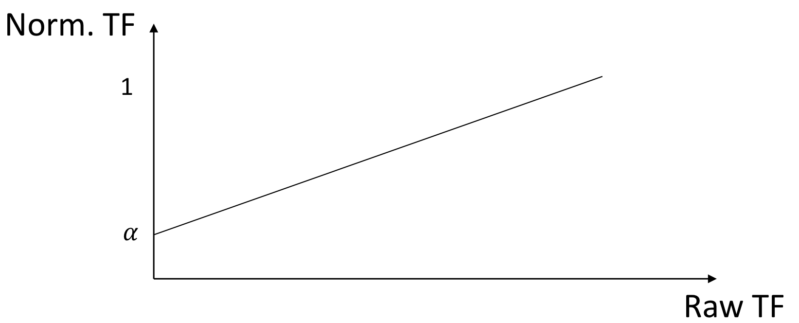
- Sub-linear TF scaling
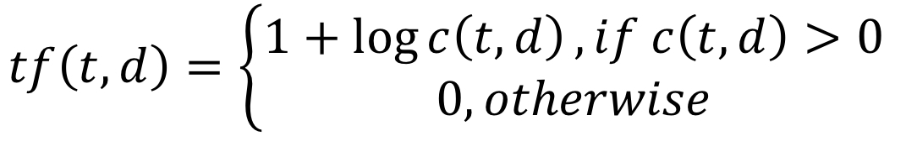
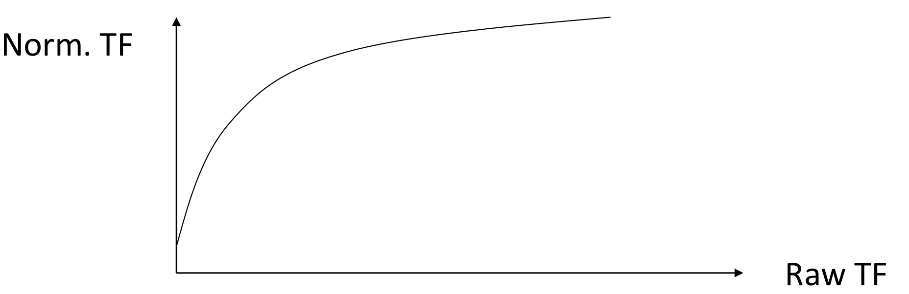
- Idea: a term is more discriminative if it occurs only in fewer documents
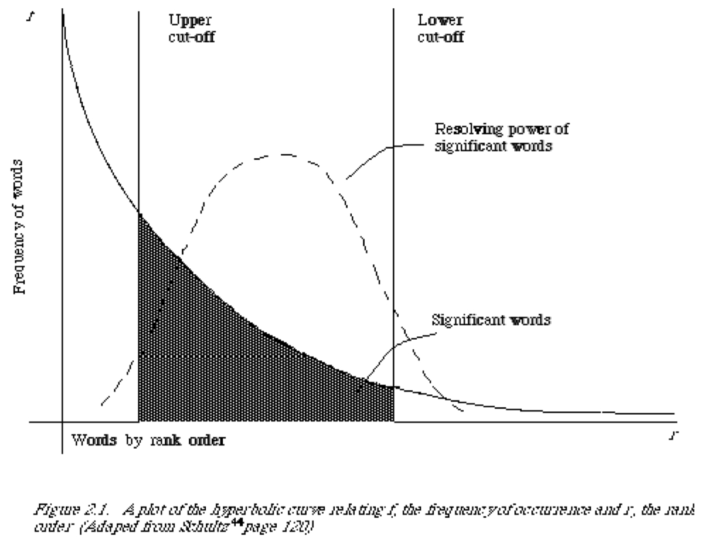
Inverse document frequency
- Solution
- Assign higher weights to rare terms
- Formula
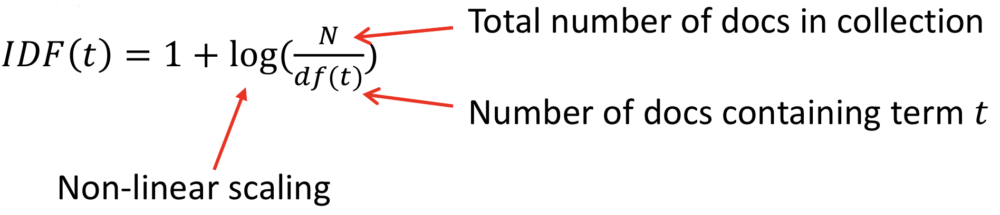
- A corpus-specific property
- Independent of a single document
What document frequency
- How about total term frequency?
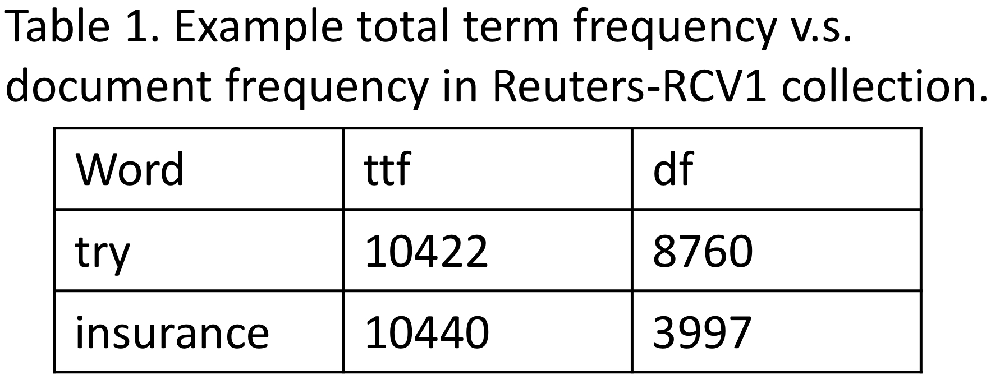
Cannot recognize words frequently occurring in a subset of documents
TF-IDF weighting
- Combining TF and IDF
- Common in doc -> high tf -> high weight
- Rare in collection -> high idf -> high weight
- Most well-known document representation schema in IR (G Salton et al. 1983)
How to define a good similarity metric?
- Euclidean distance?
- Longer documents will be penalized by the extra words
- We care more about how these two vectors are overlapped
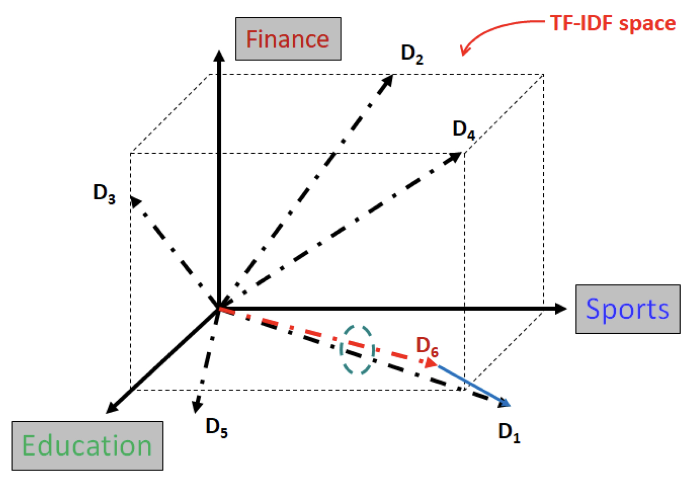
From distance to angle
- Angle: how vectors are overlapped
- Cosine similarity - projection of one vector onto another
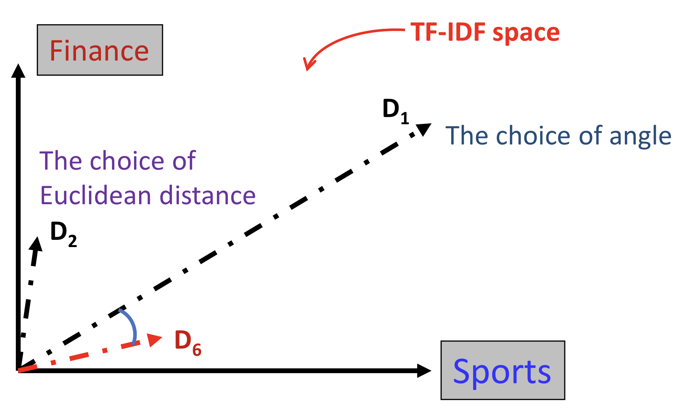
Cosine similarity
- Angle between two vectors
| =\frac{V_{d_i}^TV_{d_j}}{ | d_{d_i} | _2\times&space; | v_{d_j} | }_2) |
- Documents are normalized by length
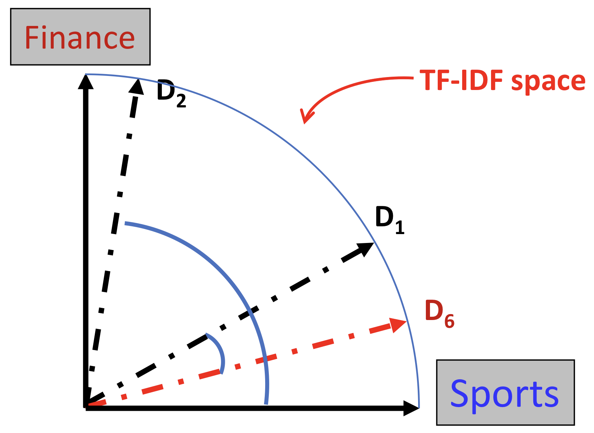
Advantage and Disadvantage of VS model
| Pros | Cons | |:———————————-:|:—————————–:| | Empirically effective | Assume term idependence | | Intuitive | Lack of “predictive adequacy” | | Easy to implement | Lots of parameter tuning | | Well-studied/mostly evaluated | | | The Smart system | | | Warning: maning variants of TF-IDF | |
Reference
- Mining of Massive Datasets by Jure Leskovec, Anand Rajaraman, Jeff Ullman
- Introduction to Big Data Lecture by Daejin Choi in Incheon National University